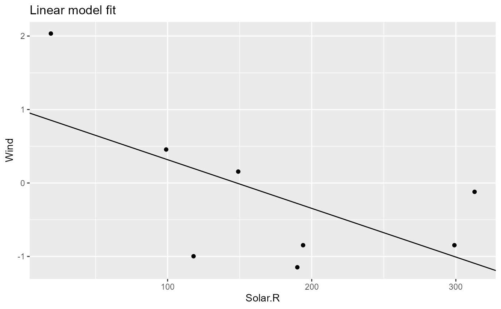

Let’s start where we left off in the Get started with pipeflow vignette, that is, we have the following pipeline
pip
# step depends out keepOut group state
# <char> <list> <list> <lgcl> <char> <char>
# 1: data <data.frame[10x6]> FALSE data Done
# 2: data_prep data <data.frame[10x7]> FALSE data_prep Done
# 3: model_fit data_prep <lm[13]> FALSE model_fit Done
# 4: model_plot model_fit,data_prep <gg[11]> FALSE model_plot Donewith the following set data
pip$get_data() |> head(3)
# Ozone Solar.R Wind Temp Month Day
# 1 41 190 7.4 67 5 1
# 2 36 118 8.0 72 5 2
# 3 12 149 12.6 74 5 3Let’s say we want to insert a new step after the
data_prep step that standardizes the y-variable.
pip$insert_after(
afterStep = "data_prep",
step = "standardize",
function(
data = ~`data_prep`,
yVar = "Ozone"
) {
data[, yVar] <- scale(data[, yVar])
data
}
)
pip
# step depends out keepOut group state
# <char> <list> <list> <lgcl> <char> <char>
# 1: data <data.frame[10x6]> FALSE data Done
# 2: data_prep data <data.frame[10x7]> FALSE data_prep Done
# 3: standardize data_prep [NULL] FALSE standardize New
# 4: model_fit data_prep <lm[13]> FALSE model_fit Done
# 5: model_plot model_fit,data_prep <gg[11]> FALSE model_plot Done
library(visNetwork)
do.call(visNetwork, args = pip$get_graph()) |>
visHierarchicalLayout(direction = "LR", sortMethod = "directed")As we can see, the standardize step is now part of the
pipeline, but so far it is not used by any other step.
Let’s revisit function definition of the model_fit
step
pip$get_step("model_fit")[["fun"]]
# [[1]]
# function (data = ~data_prep, xVar = "Temp.Celsius")
# {
# lm(paste("Ozone ~", xVar), data = data)
# }To use the standardized data, we need to change the data dependency
such that it refers to the standardize step. Also instead
of a fixed y-variable in the model, we want to pass it as a
paramter.
pip$replace_step(
"model_fit",
function(
data = ~standardize, # <- changed data reference
xVar = "Temp.Celsius",
yVar = "Ozone" # <- new y-variable
) {
lm(paste(yVar, "~", xVar), data = data)
}
)The model_plot step needs to be updated in a similar
way.
pip$replace_step(
"model_plot",
function(
model = ~model_fit,
data = ~standardize, # <- changed data reference
xVar = "Temp.Celsius",
yVar = "Ozone", # <- new y-variable
title = "Linear model fit"
) {
coeffs <- coefficients(model)
ggplot(data) +
geom_point(aes(.data[[xVar]], .data[[yVar]])) +
geom_abline(intercept = coeffs[1], slope = coeffs[2]) +
labs(title = title)
}
)The updated pipeline now looks as follows.
pip
# step depends out keepOut group state
# <char> <list> <list> <lgcl> <char> <char>
# 1: data <data.frame[10x6]> FALSE data Done
# 2: data_prep data <data.frame[10x7]> FALSE data_prep Done
# 3: standardize data_prep [NULL] FALSE standardize New
# 4: model_fit standardize [NULL] FALSE model_fit New
# 5: model_plot model_fit,standardize [NULL] FALSE model_plot NewWe see that the model_fit and model_plot
steps now use the standardized data. Let’s re-run the pipeline and
inspect the output.
pip$set_params(list(xVar = "Solar.R", yVar = "Wind"))
pip$run()
# INFO [2024-12-01 17:13:58.886] Start run of 'my-pipeline' pipeline:
# INFO [2024-12-01 17:13:58.887] Step 1/5 data - skip 'done' step
# INFO [2024-12-01 17:13:58.888] Step 2/5 data_prep - skip 'done' step
# INFO [2024-12-01 17:13:58.888] Step 3/5 standardize
# INFO [2024-12-01 17:13:58.891] Step 4/5 model_fit
# INFO [2024-12-01 17:13:58.894] Step 5/5 model_plot
# INFO [2024-12-01 17:13:58.899] Finished execution of steps.
# INFO [2024-12-01 17:13:58.900] Done.
pip$get_out("model_fit") |> coefficients()
# (Intercept) Solar.R
# 0.979672739 -0.006625601
pip$get_out("model_plot")
# Warning: Removed 2 rows containing missing values or values outside the scale range
# (`geom_point()`).
Let’s see the pipeline again.
pip
# step depends out keepOut group state
# <char> <list> <list> <lgcl> <char> <char>
# 1: data <data.frame[10x6]> FALSE data Done
# 2: data_prep data <data.frame[10x7]> FALSE data_prep Done
# 3: standardize data_prep <data.frame[10x7]> FALSE standardize Done
# 4: model_fit standardize <lm[13]> FALSE model_fit Done
# 5: model_plot model_fit,standardize <gg[11]> FALSE model_plot DoneWhen you are trying to remove a step, pipeflow by default checks if the step is used by any other step. If it is, it will raise an error.
try(pip$remove_step("standardize"))
# Error in pip$remove_step("standardize") :
# cannot remove step 'standardize' because the following steps depend on it: 'model_fit', 'model_plot'To enforce removing a step together with all its downstream
dependencies, you can use the recursive argument.
pip$remove_step("standardize", recursive = TRUE)
# Removing step 'standardize' and its downstream dependencies: 'model_fit', 'model_plot'
pip
# step depends out keepOut group state
# <char> <list> <list> <lgcl> <char> <char>
# 1: data <data.frame[10x6]> FALSE data Done
# 2: data_prep data <data.frame[10x7]> FALSE data_prep DoneNaturally, the last step never has any downstream dependencies, so it can be removed without any issues. There is another way to just remove the last step.
pip$pop_step()
# [1] "data_prep"
pip
# step depends out keepOut group state
# <char> <list> <list> <lgcl> <char> <char>
# 1: data <data.frame[10x6]> FALSE data DoneReplacing steps in a pipeline as shown in this vignette will allow to re-use existing pipelines and adapt them programmatically to new requirements. Another way of re-using pipelines is to combine them, which is shown in the Combining pipelines vignette.